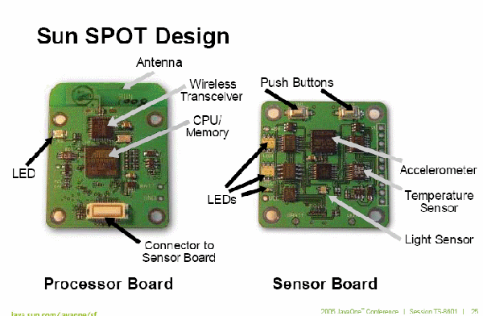

JavaOne turned 10 and they threw a party!
JavaOne was huge this year, with 15,000 conference attendees and over 200,000 on-line visitors. The world's biggest Java Developer event got lots of attention, but for more than just its attendance numbers. Besides deep structural changes to simplify the Java programing paradigm, Sun dipped more of its corporate toes into the waters of Open Source Software after its recent release of its flagship Solaris OS under the CDDL (Common Development and Distribution License).
While Java isn't free of Sun licensing encumbrances, more of it is more open to the Java developer community and key Sun software efforts are becoming OSSw projects. Leading the trend is the next version of Sun's Java Application Server, to be called Project Glassfish. This is a contribution of over 1 million lines of code! Sun's current developer group will seed the project under CDDL. Developers can view the latest daily updates, contribute to fixes and features, and join in discussions at http://glassfish.dev.java.net.
Sun also is sharing its Java System Enterprise Server Bus (Java ESB) under the OSI-approved CDDL license [ also being used for Sun's OpenSolaris project ]. While the idea of an ESB isn't new, this is the first major effort that will be OSSw-based. ESBs are based on the Java Business Integration (JBI) specification (JSR 208).
And if that isn't interesting enough.... Sun is donating 135,000 lines of collaboration-focused communication source code from its Sun Java System Instant Messaging and Sun Java Studio Enterprise products for use by the entire open source community on NetBeans.org.
The collaboration software, which was demoed both at a Keynote and at the free NetBeans Developer Day that proceeded JavaOne, is designed to increase productivity by enabling Java developers to dynamically work together anywhere around the world. It also offers corporate types a roll-their-own IM app. Both demos worked fine, but your mileage may vary.
That free NetBeans Day may have been a bit of self-promotion, but the sessions were decent and the demos were later repeated at JavaOne. Included was a very nice looking Java-based software CD player that also works nicely and is downloadable at the NetBeans web site.
Sun is also making previews of the next versions of Java available to allow greater community contributions. And Sun is simplifying its hefty naming scheme ["Java 2 Standard Edition version 5.xxx"] to just Java SE 5 [or Java EE 6]; the '2' is gone. And the release versions will not be dotted in their names. That will save some ink and even some paper [ older versions will remain unchanged. ]
Big numbers for Java: Sun claims that some 2 Billion devices have Java in some form, including 708 million mobile devices and 700 million desktops and an incredible 825 million Java-enabled smartcards! That's a whole lotta of Java.
Japanese telcom NTT/Docomo is spending a lot on Java too. Some 60% of the billion dollars its investing in new service and software development will be Java-based. This will include their 'Star' project, aimed at building the next generation Java phone runtime. There was also a new mobility kit for NetBeans developers, if you are working on embedded Java.
Open Source theme
IBM announced that they will officially support Apache Geronimo as an equal
but lightweight application server alternative for its app server,
WebSphere. IBM has been an active contributor to the Geronimo project, and as
part of that they will donate several Eclipse plugins to speed up J2EE
development. Robert LeBlanc, IBM's WebSphere General Manager, speaking at
a keynote, noted Geronimo's status for IBM and stressed the importance of
SOA [Service Oriented Architecture] for today's integration challenges.
[see more on Geronimo and the heavy use of OSSw by Java users in the BOF section of this report.]
Eclipse 3.1 was officially released after being announced at JavaOne. The new version allows users to streamline testing, create user interfaces for rich client applications, and enhance support for Ant build scripts. Also, NEC became the 100th organization to join the Eclipse Foundation.
Continuing with the developer-friendly, Open Source theme at JavaOne, BEA Systems is offering official support for both Spring and Struts frameworks running on top of WebLogic Server.
Oracle announced that it's JDeveloper J2EE development tool will be available for free and that they have partnered with the Apache MyFaces project. That was 'free' as in beer....
IBM and Sun announced a new and improved relationship - which is good for the entire Java community. After sparring a lot for recent years, they signed a new landmark agreement calling for an 11-year collaboration effort. It's actually an additional year on the current argreement plus 10 more years... so that's 11 years, but the point is that their collaboration on Java will improve. Sun's shift to a more Open Source friendly position probably placated IBM's desire for Sun to loosen its control over Java.
Sun reiterated its position: there would be more OSSw in the Java space over the next year. Would that include opening up the JVM??? That may be news for JavaOne 2006.
Jonathan Schwartz, President and COO at Sun, opened the first keynote address, titled "Welcome to the Participation Age", discussing the importance of 'participation' in building communities, creating value and new markets, and driving social change. To drive the point home, Schwartz added, "The Information Age is over." [Really?] He was, to be sure, referring to Sun's new branding that has a curvaceous, subliminal "S" that stands for "Share" and extends that term to mean OSSw, Developer communities and even the Wikipedia. Schwartz re-emphasized that Sun has always shared some of its IP going back to the founding days of Unix. But watch the replay of the keynote to judge for yourself.
Keynote Link
Since all the keynotes are posted now - and were available by internet broadcast in real time - please check out the link: http://java.sun.com/javaone/sf/sessions/general/index.jsp
During the second keynote, Graham Hamilton, a Sun fellow and vice president, addressed advances planned for Java SE software over the two upcoming releases, a period of 3 years!
Hamilton offered developers an early taste of Java SE 6 software, which is
expected to ship in summer 2006, and invited them to contribute directly to
the future of Java by reviewing source code, contributing bug fixes and
feature implementations and collaborating with Sun engineers. Developers
can join the community at http://community.java.net/jdk.
The following Java SE 6 features are [or soon will be] available for
testing and evaluation at the JDK software community site on java.net:
- Support for client-side web services, including a revamped XML stack, a new scripting engine, declarative programming support through annotations and improved developer experience for JDBC technology programming
- Improved end-user experience: An implementation of Microsoft's "Longhorn" look and feel and the ability to co-exist with the .NET Common Language Runtime (CLR), and numerous other graphics enhancements [I'm not sure everyone thinks this is 'better'.]
- A new, simpler and faster code verifier and enhanced file I/O.
- Streamlined development: Java SE 7 software will extend the use of generics in the Java Management Extensions (JMX) API and will use annotations to help make the job of writing Mbeans simpler and quicker for developers. This will help speed time to market and reduce development costs;
- Simpler administration: Java technology code and resources will be packaged into modules that identify resources and dependencies and will provide the ability to discover and load applications in real time.
- XML web services will be used for remote management with the JMX API
- Direct support for XML data types within the Java programming language
On the Enterprise Java Beans [EJB] development side, there is a new spec that does away with the Container Managed Persistence scheme [CMP] and make EJBs much more like 'Plain old Java objects' [or POJOs]. This came about from a lot of discussion and arm-wrestling with alternative projects and frameworks, most notable Toplink, Hibernate and JDO. So there will be one single persistence model for both Java SE and EE going forward.
The new scheme makes extensive use of the new Annotations feature which allows for in-code specification of resources and dependencies. Although this approach is not without some controversy in the developer community, it should ease reading code and do away with complicated deployment descriptors and, perhaps, make the intent of a developer or team more obvious. See information on Annotations here: http://java.sun.com/j2se/1.5.0/docs/guide/language/annotations.html
Sun is also releasing support for integration with scripting languages over both Java 6 and 7 SE. A technical session - TS-7706 Scripting in the Java™ Platform - described the new scripting engine that is already available in beta format and will be included in Mustang, Java 6. It is based on JSR 223 and will support several scripting languages.
[I'm including session numbers and titles since most of the presentations can be freely downloaded now - see last section below.]
There were several sessions dealing with performance and security, and these were among the most heavily attended.
The Tuesday session on performance, TS-3268, Performance Myths Exposed, was one of the few actually repeated on the last day. It reviewed several strategies and tested these on small and large apps. It also compared 7 JVMs Against 6 performance hacks and summarized it:
- use of "final" does not help performance - in-lining is automatic
- try/catch blocks are [mostly] free
- use of RTTI is a marginal performance win at best - with maintenance costs
Also of note, in spite of an ungainly title, was TS-3397: Web Services and XML Performance and the Java™ Virtual Machine: What Your JVM™ Is Doing During That Long Pause When XML Processing, With Optimization Suggestions which highlighted some practical rules-of-thumb to speed XML-Java interactions:
- Understand overall processing pipeline
- The most efficient XML representation is (probably) byte[]
- Avoid touching XML directly, but if you must touch:
- Only headers
- Only once
- Use the right API/interface for the task
- e.g., Axis for SOAP, Xalan TrAX for XSLT, JAXB for marshalling
- Corollary to above: you probably don’t want DOM
- Avoid extensions
- Use coarser-grained APIs
In the area of new and novel, the good Doctor Bil Lewis from lambdacs.com offers the Omniscient Debugger [for free]. This was during TS-7849. This debugger collects "time stamps" of everything that happens in a program. The debugger runs from the command line and once data is collected you can navigate backwards in time to look at objects, variables, method calls, etc.
"This is the debugger that you have always dreamed about, but never thought possible," said Bil Lewis, who developed the ODB. "You can see which values are bad, locate them, and learn who set them and why. You don't have to guess where the problems might be. You don't need to set breakpoints or wonder which threads ran or which methods were called. If a problem occurred, you can find it. You don't ever have to rerun the program."
Expect to generate huge log files and have seriously degraded performance while the logger/debugger is running. Dr. Lewis estimated a hit of 1:2 to 1:40 or so. But you will have all the needed info to find out where the bug was introduced. And it's free... all in a single debugger.jar file.
New Security for Web Services, TS-7247, focused on both Java 5 and the forthcoming Java 6. New features beef up Java security with RSA public key encryption, triple DES support in Kerberos, XML digital signatures, a certificate creation API, and a multithreaded SSL engine. There are also indefinite plans to include a new Microsoft C-API, which would assist Sun's efforts to better interoperate with future Microsoft crypto offerings.
One of the best TS presentations I've caught was TS-3955, "Nine Ways to Hack your Web Application", which rated 5 stars by my lights -- complete, concise, interesting, informative, and with clear slides and a knowledgeable speaker. I overheard many developers praising it in lines for other sessions.

In the Very Cool category was the Sun SPOTS project, in conjunction with UC
Berkeley. This is a preparation for ubiquitous wireless nets of
nano-robots acting as remote sensors. The SPOTS are capable of autonomous
work and dynamic reprogramming. For instance, they could monitor light and
heat in office buildings after hours to cut energy waste. This is reported
in TS-8601 Java™ Technology and Smart-Dust: Building Intelligent
Sensor Networks.
These low power sensor devices are called motes or SPOTS:
- Low power - battery can last up to 10 years
- No external wiring for power or communications
- Wireless 802.15.4 connectivity uses mesh networking
- Original work done at UC Berkeley by Professor Kris Pister
- Commercialized through Dust Networks™
- Simple hardware is used that any computer hobbyist can find:
- ARM7 CPU (75MHz)
- 256Kb SRAM running an 80 KB JVM
- 2Mb Flash Memory
- Chipcon CC2420 RF Transceiver (2.4GHz) with Light and Temperature sensors and a 3-axis accelerometer.
The remarkable thing is that its all Java, including the device drivers [no C] and runs directly on the hardware. The JVM is J2ME-based and supports a multithreaded programming model. Here's a picture.
Also cool was Boeing's static display of its self-piloting drone in the Pavillion. It uses a 'real time' version of Java and can remain on station for more than 15 hours. Scott McNealy joked at a Keynote that Boeing wanted to fly it for a demo, but SF officials didn't want an aircraft flying itself inside a building. More information is here: http://www.boeing.com/defense-space/military/unmanned/scaneagle.html.
And for the TV and Movie junkies....
Blu-Ray has Java inside
This was announced at a keynote. Next years' future Blu-Ray HD-DVD players will ship with Java inside. Blu-Ray is a new DVD format with up to 50 Gigabytes on a single disc. The format was developed to record high-definition HD video and for storing large amounts of data. Blu-Ray devices will have a network connection for SOHO use and value-added services. Several devices were on display at the Pavillion Expo showing classy 3D menus that made use of the black space above and below a letter-boxed movie.
There were almost 200 BOFs [Birds of a Feather sessions], almost as many as conference sessions, and only for 3 evenings, so the overlap factor was very high. Although there were only a handful in the 11pm hour, there were a lot of people hanging out past 10 pm. The conference organizers probably should have scheduled some of these for Thursday evening, after the last conference sessions, since dozens of BOFs occurred during the big conference bash - with lots of rock 'n' roll and beer - and that gave many attendees double conflicts.
Unfortunately, the presentations from the BOFs are not going to be posted on the JavaOne web site, so there is no second chance on this material. I'm just sorry I didn't catch more of them.
A solid BOF reported on the Open Source use by Java Developers. Albion Butters, a senior analyst at Evans Data, reported on a new study showing 80% percent of heavy Java users (using Java more than 50% of the time) and 73% of light Java users (less than 50% of the time) use open source software for development compared to less than 45% of non-Java developers. In addition, Java users have more confidence in Linux for mission critical applications with 80% having enough confidence to use it in such important deployments compared to less than 50% of non-Java users.
"Microsoft's .NET has established a slight lead in the overall development space over Java, but we have found that the situation reverses in the enterprise space with more development taking place in Java than in .NET, 60% to 56% respectively", Butters said. Also, the study, involving some 20,000 developers, found that heavy Java users write multithreaded apps ~80% of the time, vs. only ~30% for non-Java users. Evans Data provides market intelligence for the IT industry.
This was BOF-9187: "Sorting Out Java Technology Fact from Java Technology Fiction: Trends, Adoption, Migrations, and Key Issues facing the Developer Today and Tomorrow". See a slide HERE.
It should be worth looking up TS-7011, Architectural Overview of the Apache Geronimo Project. Although I couldn't fit that one into my schedule, I did attend the associated BOF. [Geronimo is an Apache project to produce an OSSw J2EE app server.]
The Geronimo BOF
Sometimes you go to a good BOF... sometimes its a really good BOF. In this case, the Geronimo BOF had a surprise announcement early on.
While Aaron Mulder gave a short status talk on the project, highlighting that they were almost ready to pass the J2EE TCK, he was interupted by team member David Jencks who carried an open laptop.
"Its all green!," Jencks shouted as he walked up to a smiling Mulder. Jencks carried his laptop around showing the result of the test suite – all green bars. He said that represented 23,000 test cases and it had been running for a very long time.
Mulder, with rising confidence, announced that NOW Geronimo is J2EE compliant and got a crash of applause. He and his team gave thanks to the many OSSw projects that had software incorporated into Geronimo, including Jetty, OpenEJB, Howl, etc. Although the test was passed, the developers explained that there were additional usability issues to clear up before the J2EE certification would be official [this was completed shortly after JavaOne 2005].
Since many of the developers at Geronimo are IBM employees, there was a BOF question asking to position Geronimo verses WebSphere. Mulder joked "Well, we just wanted to release a shoddy product that no one will want..." [ later there were snarky remarks from an IBM JVM engineer regarding Sun's JVM, showing the true state of the IBM-Sun partnership. But then this was a late BOF, and many of these guys had been working all day on the certification. ]
BOF attendees were also warned not to download the so-called milestone release -- it's outdated. Instead, they encouraged everyone to download the "unstable release" which is actually more complete and more stable. [ See, everything we knew is wrong.... ]
"Hello World(s): From Code to Culture"
Sun is publishing a commemorative coffee table book that covers how the Java technology revolution got started and where Java technology can go in the future. The first 500 attendees to pre-order the book at the JavaOne got a free Java mug and will get a copy of the book autographed by James Gosling. And those signing up at JavaOne could have their names included in the book as members of the Java Community. Sweet perk!
Simplified Format, Snacks
The format of JavaOne was simplified this year by not having early AM session before keynotes and by holding fewer but larger sessions. Some rooms (but not all) were set up for overflow sessions, and those that were 'televised' live did not always start at the beginning of presentations. This also lead to longer and slower lines entering technical sessions.
The delay was partly due to the conference planners, since they made people line up for technical sessions and then required everyone to have their badge RFID tag read by a scanner. So, to get a decent seat, we had to line up immediately after leaving a session and wait for the entire 15 minute break time before they let anyone in. It was a bit like being back in High School.
They were in fact trying to find out the most popular sessions and which ones deserved repeating - and by late Tuesday they had added more RFID readers and were allowing folks to enter earlier. But I do remember lining up for a session which filled up and then being redirected to another line at the overflow room which wasn't allowed to enter until after the session was underway. [Grrr!]
Food also was much simpler, and less interesting, with box lunches and only served at a single large room in the Moscone Center. In contrast, in previous years there were 2 or 3 large tents set up outside in the park-like Yerba Buena Center with multiple buffet lines. That way, people could get in quickly, pick the items they wanted, and get seconds if desired. But this new arrangement was probably easier to plan.
I have attended many JavaOne conferences and have written about the many amenities in glowing terms. This year, with a new conference planning outfit, the standards slipped a few notches.
Snacks were clearly of lower quality. Only corn and potato chips and Rice Krispies' Marshmallow Bars [made with animal gelatin], with occasional pretzels. No energy bars, no health food, very little fruit and certainly no cookies or brownies! There was only a single coffee and tea service in the afternoon, but there were 3 regular sessions and then 4 hours of BOFs. I saw several attendees carrying in Starbuck's cups, probably because they couldn't wait for the late afternoon beverage service or needed a boost in the evening.
JavaOne originally set the standard for food and snacks at developer conferences. In this area, JavaOne has certainly fallen. Compared to SoftwareDevelopment and OracleWorld, this was a vastly inferior affair for food. But JavaOne is still a premier technical conference.
You might want to pack your own Cliff Bars next year. And bring a thermos of java juice....
JavaOne Resources
Here's a short guide to more JavaOne materials:
• all papers - but you need to register with Sun's Developer Network:
https://jsecom16a.sun.com/ECom/EComActionServlet
You can also try the javaone home page if you have trouble:
http://java.sun.com/javaone/sf
• javaone keynotes
http://java.sun.com/javaone/sf/sessions/general/index.jsp
• sys-con.tv on java one...
http://www.sys-con.tv/read/category/1132.htm
![[BIO]](../gx/authors/dyckoff.jpg) Howard Dyckoff is a long term IT professional with primary experience at
Fortune 100 and 200 firms. Before his IT career, he worked for Aviation
Week and Space Technology magazine and before that used to edit SkyCom, a
newsletter for astronomers and rocketeers. He hails from the Republic of
Brooklyn [and Polytechnic Institute] and now, after several trips to
Himalayan mountain tops, resides in the SF Bay Area with a large book
collection and several pet rocks.
Howard Dyckoff is a long term IT professional with primary experience at
Fortune 100 and 200 firms. Before his IT career, he worked for Aviation
Week and Space Technology magazine and before that used to edit SkyCom, a
newsletter for astronomers and rocketeers. He hails from the Republic of
Brooklyn [and Polytechnic Institute] and now, after several trips to
Himalayan mountain tops, resides in the SF Bay Area with a large book
collection and several pet rocks.

{kind=link}